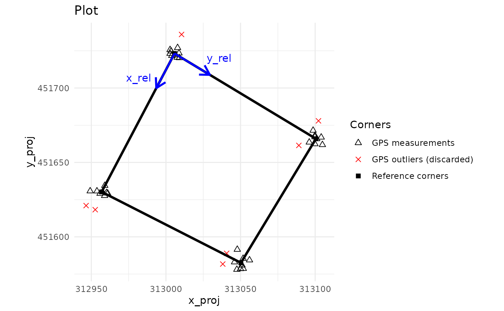
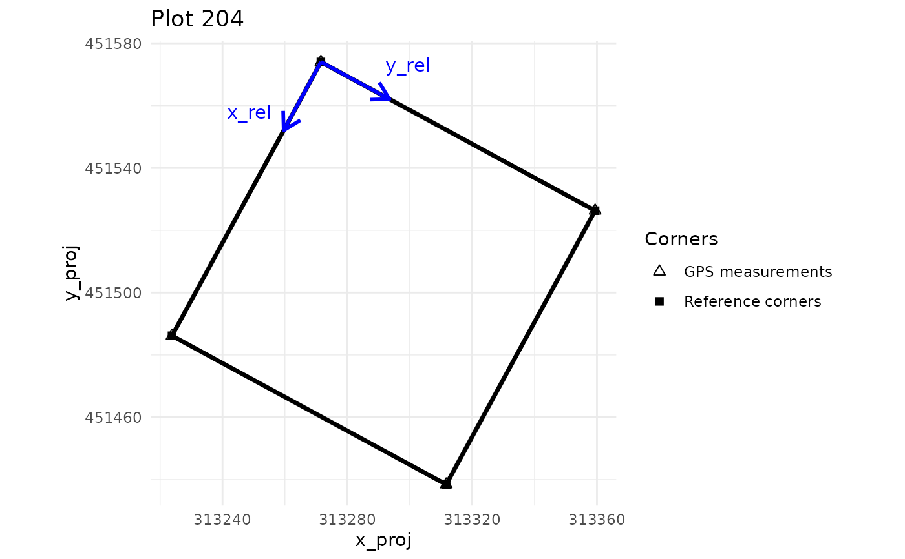
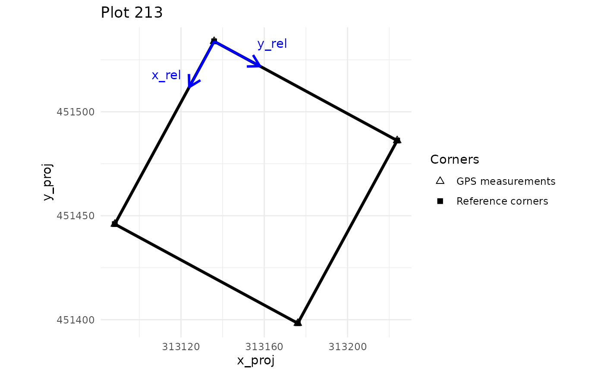
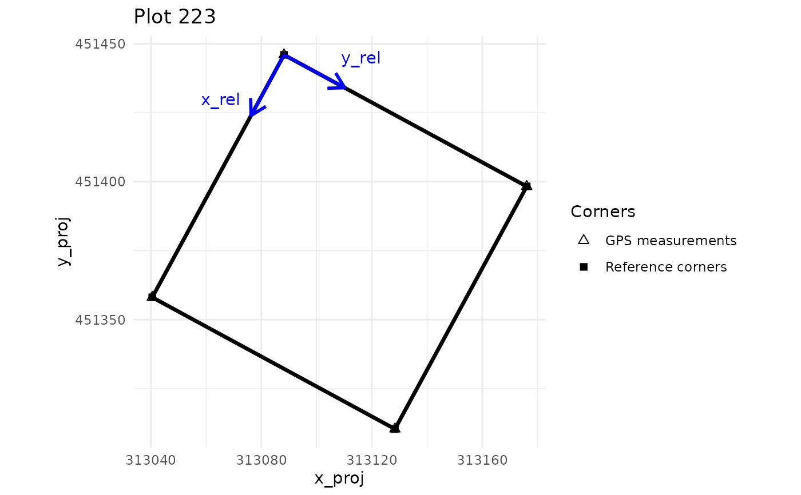
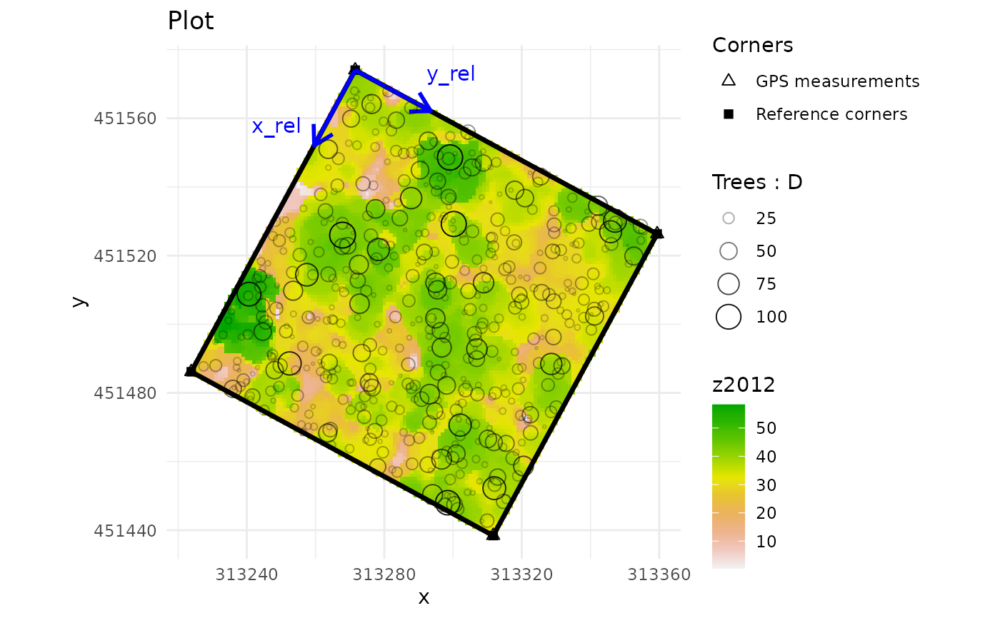

Quality check of plot corner and tree coordinates.
Usage
check_plot_coord(
corner_data,
proj_coord = NULL,
longlat = NULL,
rel_coord,
trust_GPS_corners,
draw_plot = TRUE,
tree_data = NULL,
tree_coords = NULL,
max_dist = 10,
rm_outliers = TRUE,
plot_ID = NULL,
tree_plot_ID = NULL,
ref_raster = NULL,
shapefile = NULL,
prop_tree = NULL,
threshold_tree = NULL,
ask = TRUE
)Arguments
- corner_data
A data frame, data frame extension, containing the plot corner coordinates.
- proj_coord
(optional, if longlat is not provided) A character vector of length 2, specifying the column names (resp. x, y) of the corner projected coordinates.
- longlat
(optional, if proj_coord is not provided) A character vector of length 2 specifying the column names of the corner geographic coordinates (long,lat).
- rel_coord
A character vector of length 2 specifying the column names (resp. x, y) of the corner relative coordinates (that of the field, ie, the local ones).
- trust_GPS_corners
A logical indicating whether or not you trust the GPS coordinates of the plot's corners. See details.
- draw_plot
A logical indicating if the plot design should be displayed and returned.
- tree_data
A data frame, data frame extension, containing the relative coordinates (field/local coordinates) of the trees and optional other tree metrics.
- tree_coords
A character vector specifying the column names of the tree relative coordinates.
- max_dist
If dealing with repeated measurements of each corner : the maximum distance (in meters) above which GPS measurements should be considered outliers (default 15 m).
- rm_outliers
If TRUE and dealing with repeated measurements of each corner, then outliers are removed from the coordinate calculation of the referenced corners.
- plot_ID
If dealing with multiple plots : a character indicating the variable name for corner plot IDs in corner_data.
- tree_plot_ID
If dealing with multiple plots : a character indicating the variable name for tree plot IDs in tree_data.
- ref_raster
filename (character) of the raster to be displayed (typically a CHM raster created from LiDAR data), or a SpatRaster object from terra package.
- shapefile
filename (character) of the shapefile to be displayed, or an object of class 'sf' (sf package).
- prop_tree
The column name variable of tree_data for which the tree visualization will be proportional.
- threshold_tree
a numeric of length 1: the threshold of the 'prop_tree' variable at which trees will be displayed on the plot.
- ask
If TRUE and dealing with multiple plots, then prompt user before displaying each plot.
Value
Returns a list including :
corner_coord: a data frame containing the projected coordinates (x_proj and y_proj) and the relative coordinates (x_rel and y_rel) of the 4 corners of the plotpolygon: a sf object containing plot's polygon(s)tree_data: iftree_datais provided in the arguments of the function, a data frame corresponding to tree_data for which the projected coordinates of the trees (x_proj and y_proj) are added, and also a variable telling if the trees are inside the plot (is_in_plot). The name of the relative tree coordinates are also standardised and renamed to (x_rel and y_rel).outliers: a data frame containing the projected coordinates and the row number of GPS measurements considered outliersplot_design: ifdraw_plotis TRUE, a ggplot object corresponding to the design of the plotUTM_code: iflonglatis provided, a data.frame containing the UTM code of the corner GPS coordinates for each plotsd_coord: a data frame containing (for each plot) the average standard deviation of the GPS measurements for each corner on the X and Y axes.
Details
If trust_GPS_corners is TRUE, corner coordinates in the projected coordinate system are averaging by corner (if multiple measures) and outlier corners are identified sequentially using these averages and the max_dist argument. Then, projected coordinates of the trees are calculated from the local coordinates using a bilinear interpolation that follows the correspondence of the corners between these two coordinate systems. Be aware that this projection only works if the plot, in the relative coordinates system, is rectangular (ie, has 4 right angles).
If trust_GPS_corners is FALSE, corner coordinates in the projected coordinate system are calculated by a procrust analysis that preserves the shape and dimensions of the plot in the local coordinate system. Outlier corners are also identified sequentially and projected coordinates of the trees are calculated by applying the resulting procrust analysis.
If longlat is provided instead of proj_coord, the function will first convert the long/lat coordinates into UTM coordinates. An error may result if the parcel is located right between two UTM zones. In this case, the user has to convert himself his long/lat coordinates into any projected coordinates which have the same dimension than his local coordinates (in meters most of the time).
If longlat and proj_coord are provided, only longitude/latitude coordinates will be considered.
When ref_raster is provided, this raster is cropped for every plot contained in corner_data.
Author
Arthur PERE, Maxime REJOU-MECHAIN, Arthur BAILLY
Arthur BAILLY, Arthur PERE, Maxime REJOU-MECHAIN
Examples
# One plot with repeated measurements of each corner
data("NouraguesPlot201")
check_plot201 <- check_plot_coord(
corner_data = NouraguesPlot201,
proj_coord = c("Xutm","Yutm"), rel_coord = c("Xfield","Yfield"),
trust_GPS_corners = TRUE, draw_plot = FALSE)
check_plot201$corner_coord
#> x_rel y_rel x_proj y_proj
#> 1 0 0 313005.7 451723.2
#> 2 100 0 312956.9 451630.2
#> 3 100 100 313050.2 451582.6
#> 4 0 100 313100.5 451665.9
# \donttest{
check_plot201$plot_design

# }
# 4 plots with one measurement of each corner
data("NouraguesCoords")
check_plots <- check_plot_coord(
corner_data = NouraguesCoords,
proj_coord = c("Xutm","Yutm"), rel_coord = c("Xfield","Yfield"),
trust_GPS_corners = TRUE, plot_ID = "Plot", draw_plot = FALSE)
check_plots$corner_coord
#> plot_ID x_rel y_rel x_proj y_proj
#> 1 201 0 0 313007.9 451717.2
#> 2 201 100 0 312960.2 451629.3
#> 3 201 100 100 313048.0 451581.6
#> 4 201 0 100 313095.8 451669.5
#> 5 204 0 300 313271.5 451574.0
#> 6 204 100 300 313223.8 451486.2
#> 7 204 100 400 313311.7 451438.4
#> 8 204 0 400 313359.4 451526.3
#> 9 213 100 200 313135.9 451533.9
#> 10 213 200 200 313088.2 451446.0
#> 11 213 200 300 313176.1 451398.3
#> 12 213 100 300 313223.8 451486.2
#> 13 223 200 200 313088.2 451446.0
#> 14 223 300 200 313040.5 451358.1
#> 15 223 300 300 313128.4 451310.4
#> 16 223 200 300 313176.1 451398.3
# \donttest{
check_plots$plot_design
#> $`201`
#>
#> $`204`

#>
#> $`213`

#>
#> $`223`

#>
# }
# Displaying the associated CHM raster and representing trees proportionally to their diameter
plot_204_coords <- NouraguesCoords[NouraguesCoords$Plot==204,]
data("NouraguesTrees")
plot_204_trees <- NouraguesTrees[NouraguesTrees$Plot == 204, ]
nouragues_raster <- terra::rast(
system.file("extdata", "NouraguesRaster.tif",
package = "BIOMASS", mustWork = TRUE)
)
check_plot_204 <- check_plot_coord(
corner_data = plot_204_coords,
proj_coord = c("Xutm","Yutm"), rel_coord = c("Xfield","Yfield"),
trust_GPS_corners = TRUE, draw_plot = FALSE,
tree_data = plot_204_trees, tree_coords = c("Xfield","Yfield"),
ref_raster = nouragues_raster, prop_tree = "D", threshold_tree = 25
)
# \donttest{
check_plot_204$plot_design

# }